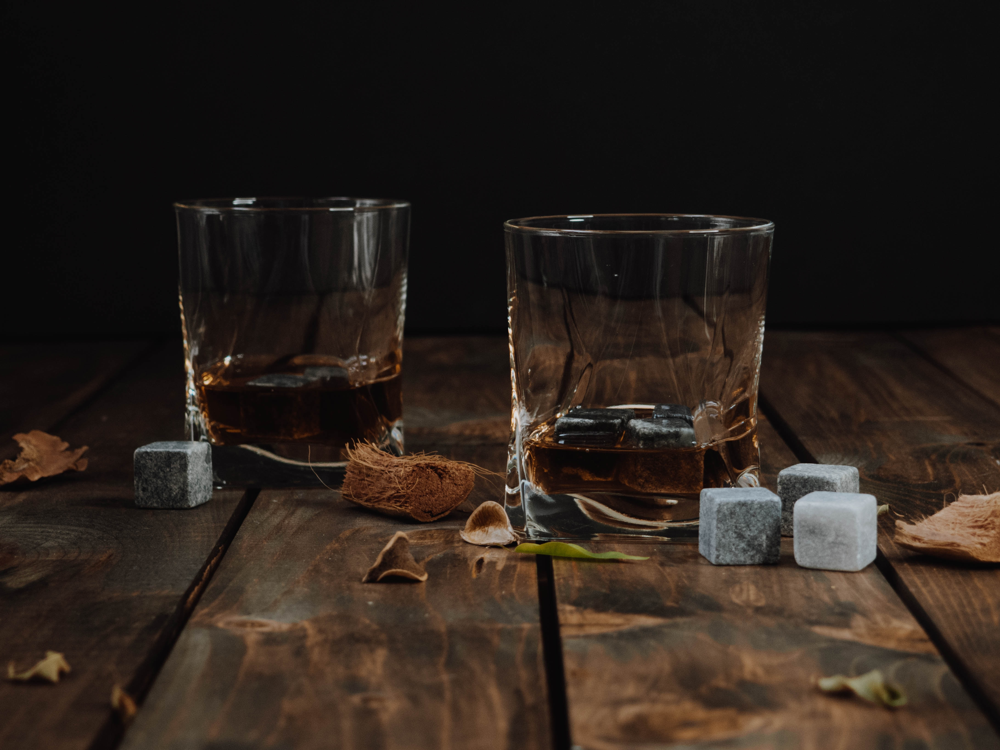
Whiskey World
My favorite whisky is Jack Daniels . I tried the Jack Daniels three years ago. The Lamborghini Huracán (Spanish for "hurricane"; [uɾa'kan]) is a sports car manufactured by Italian automotive manufacturer Lamborghini replacing the previous V10 offering, the Gallardo.[5] The Huracán was revealed online in December 2013,[6] making its worldwide debut at the 2014 Geneva Auto Show,[7] and was released in the market in the second quarter of 2014. Jack Daniel's is a brand of Tennessee whiskey. It is produced in Lynchburg, Tennessee, by the Jack Daniel Distillery, which has been owned by the Brown–Forman Corporation since 1956. Packaged in square bottles, Jack Daniel's "Black Label" Tennessee whiskey sold 12.9 million nine-liter cases in 2017. Other brand variations, such as Tennessee Honey, Tennessee Apple, Gentleman Jack, Tennessee Fire, and ready to drink (RTD) products brought the total to more than 16.1 million equivalent adjusted cases for the entire Jack Daniel's family of brands.
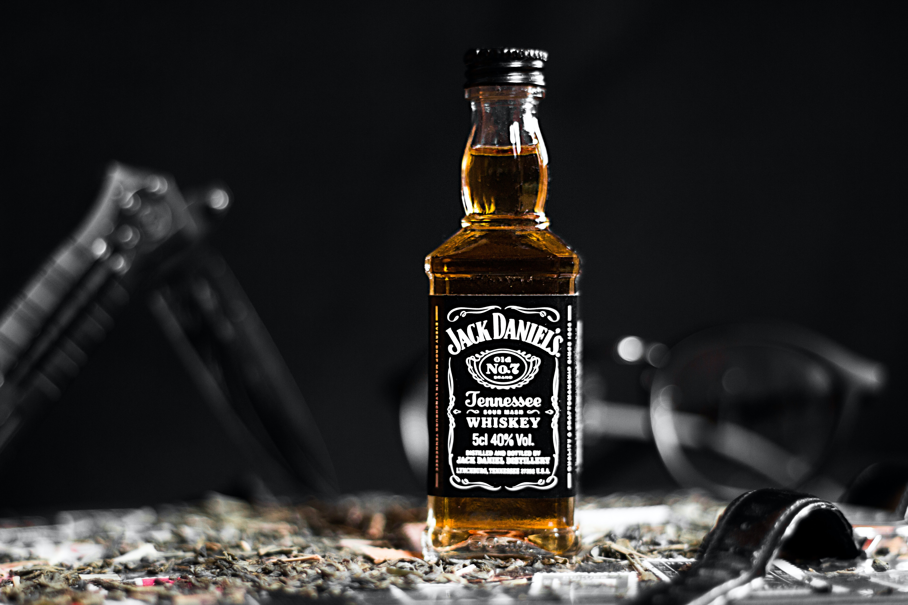
Jack Daniels

Johnnie Walker

Jameson
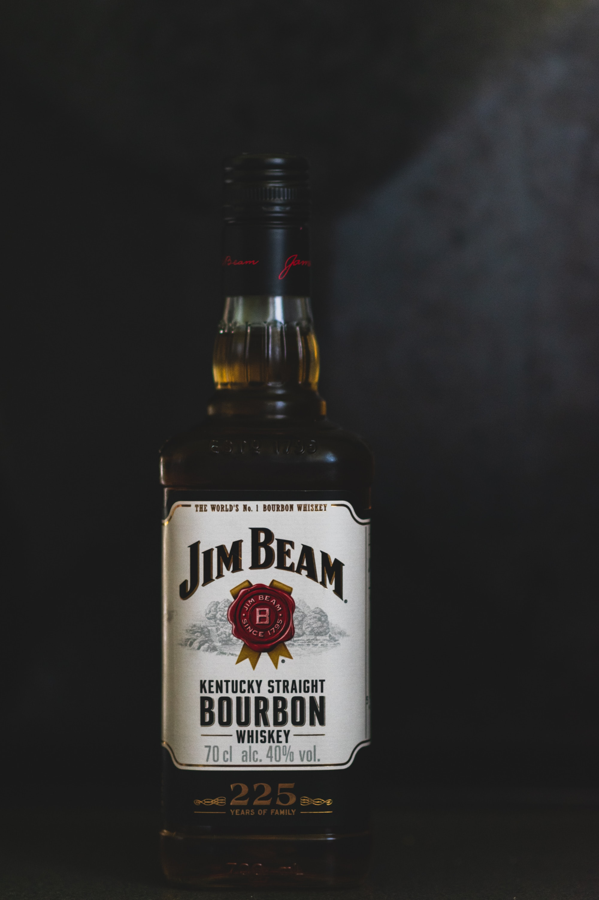
Jim Beam
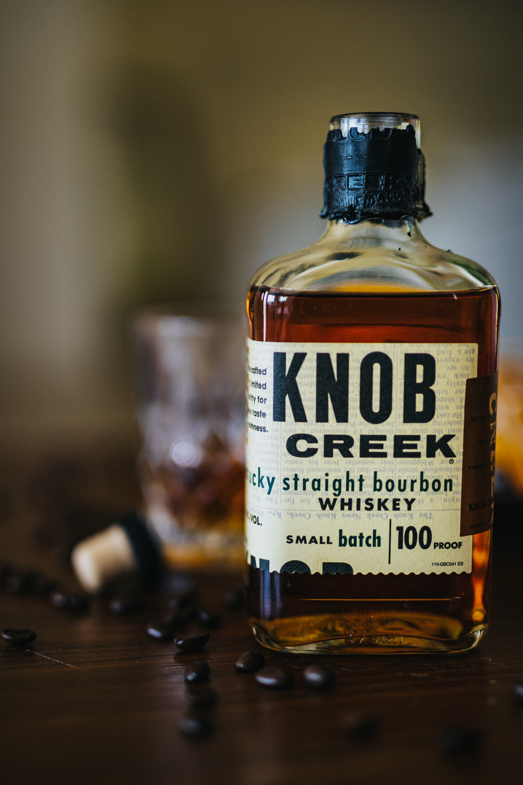
Knob Creek
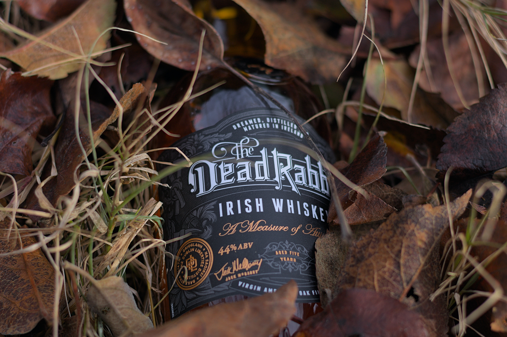
The Dead Rabbit
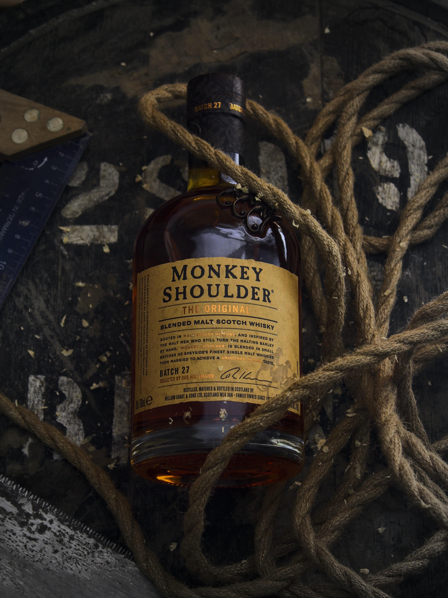
Monkey Shoulder
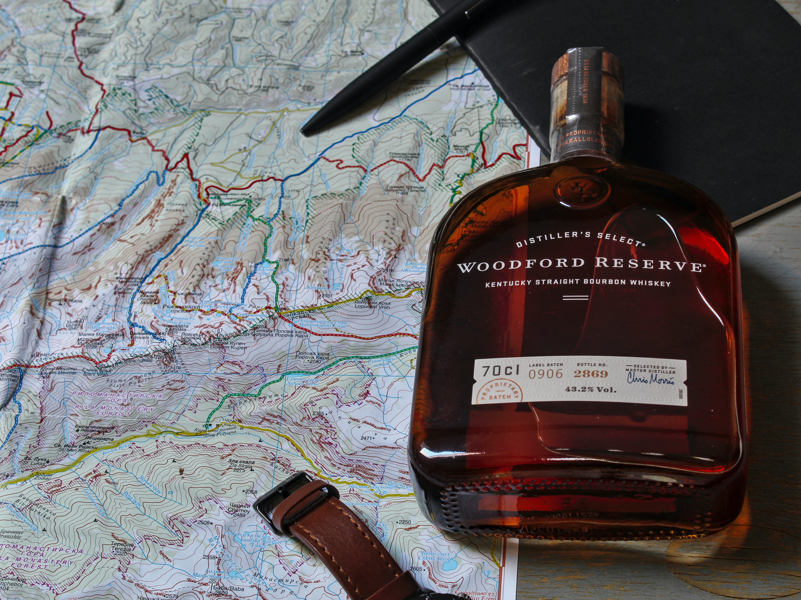
Woodford Reserve
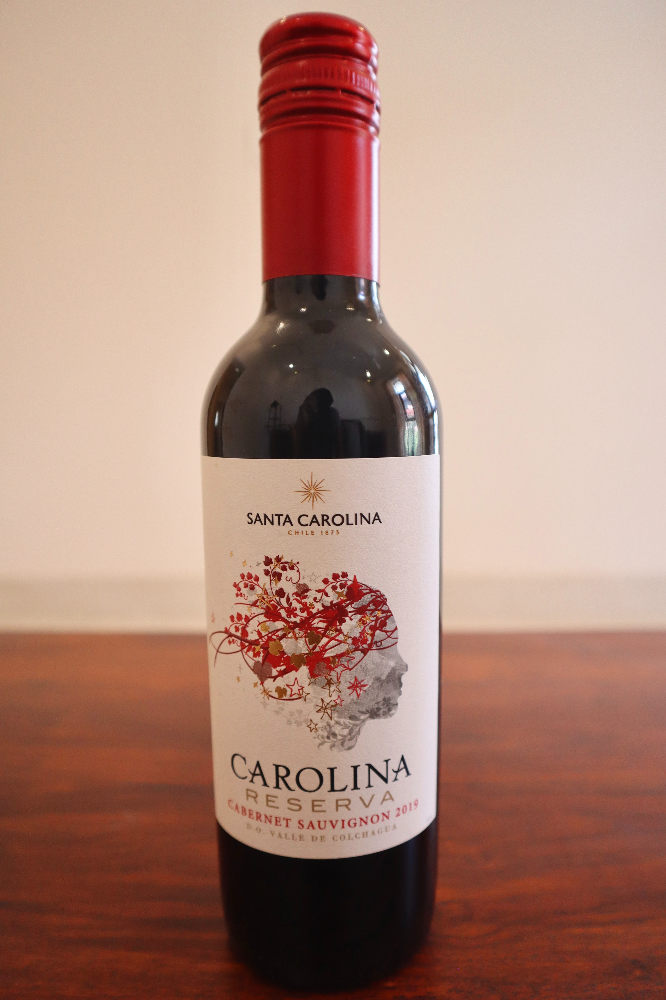
Santa Carolina
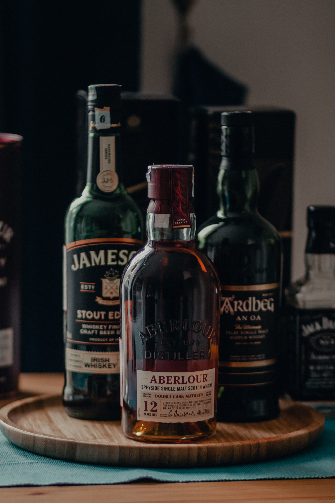
Aberlour
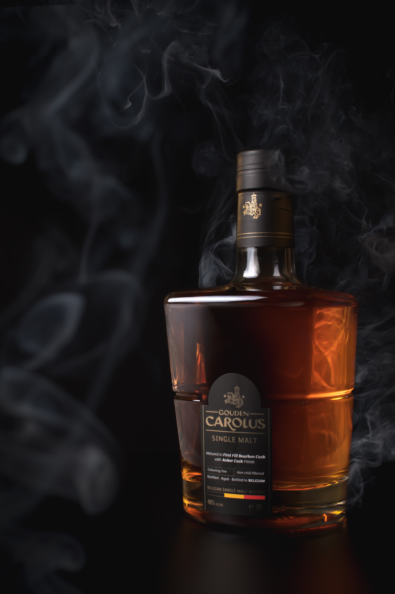
Gouden Carolus
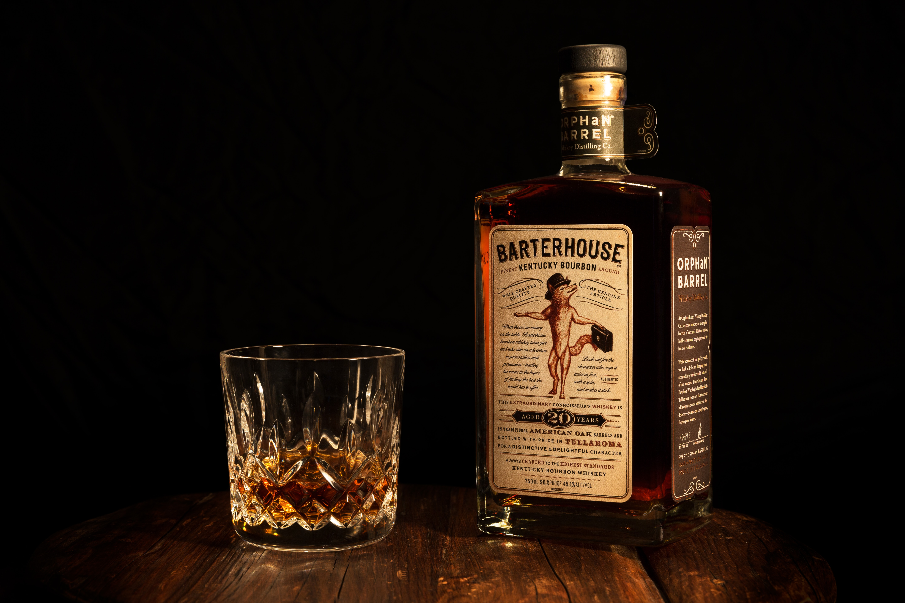